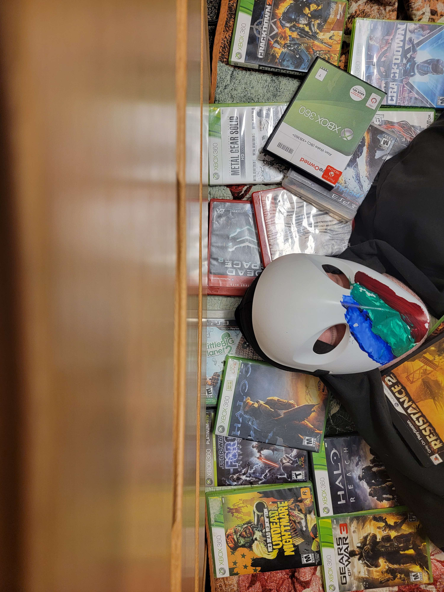
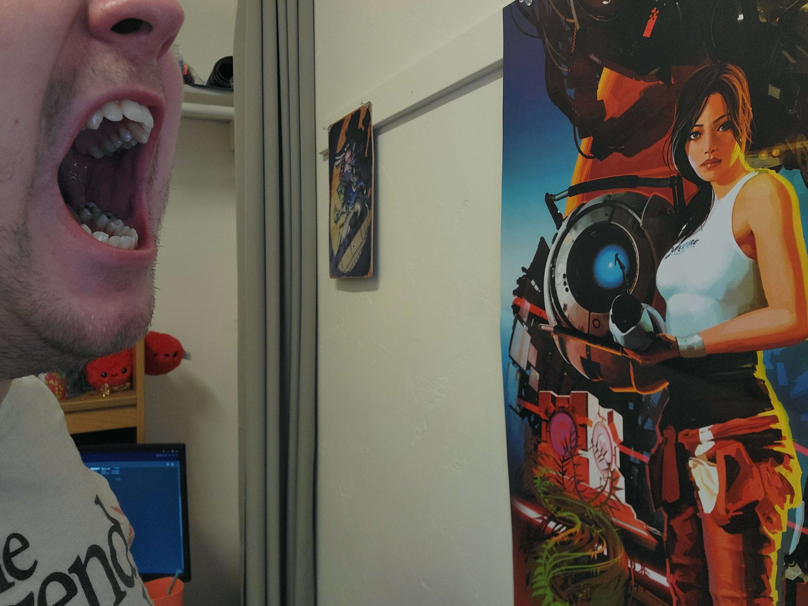
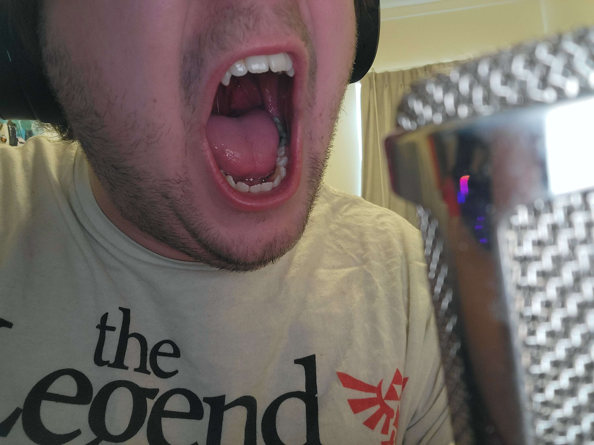
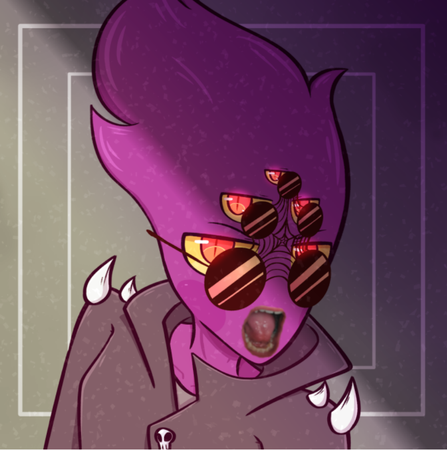

The wild gamer begins his festering half-life in a 'spawning pool,' a pit filled with fertilized game cartridges. History tells us the first gamers arose from the various colossal piles of ET for the Atari, and began roaming the earth.
It appears this gamer is further down the line of evolution, judging by the spawning pool. He seems to be an early or late 2000s specimen, too late for N64 nostalgia but too early to be succeptible to the Fortnite disease. We'll call his breed "pretentious".
A Rather Loud Upbringing...
We return to our specimen further into his life cycle, seeing his aggressive and cynical behavior toward the medium he was (literally) born into. Specialists refer to this as an "edgy phase"...
(To avoid agitating our specimen moving forward, we will no longer be referring to him as a "gamer," as the label enrages the pretentious breed of games enthusiast. We will use what synonyms we can to ensure the safety of our readers.)
A Peculiar Medium
Moving further in time, we see our specimen transitioning away from his "edgy phase" as he's discovered an outlet to channel his aggression into, giving our little G-word a chance to process his own negativity.
The Pretentious breed is known to be strangely drawn to the medium of YouTube, where people with zero qualifications can engage in artful discourse. Delving into online discussion is a slippery slope for the gaming-inclined, however.
Potential risks of YouTuberism:
- Inflated Ego
- Prolonged Edgy Phase
- Financial Destitution
- Plagiarism
- Erotic Body Pillow Collection
- Normal Body Pillow Collection
- "Did you know 100% of my viewers aren't subscribed?"
- Substance Abuse
- Awarding Anger Issues In Favor Of Content
- Possible assau-
Dear Lord, he found us. He broke into our studio after seeing that all our headers' first initials spell "AAA" and he's in a fit of rage...
I've never seen a man break through a door with such force, he's coming my way, I don't know if I'll be able to post this but let this be a learning experience to gaming historians everywhere! LET MY STORY LIV-
IS THAT FUCKING PAPYRUS FONT?!?!
As John Fallout once said:
"War, war is pretty repetitive." -Jonathan "Todd Howard" FalloutCheck out my reflection of this atrocity.